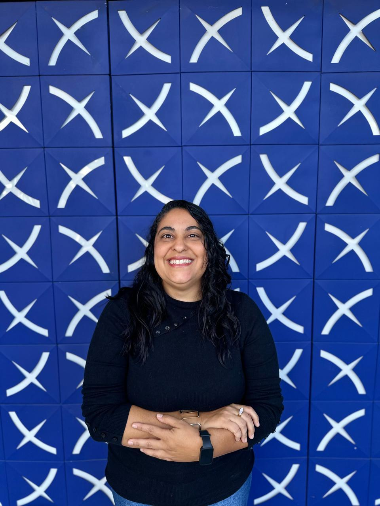
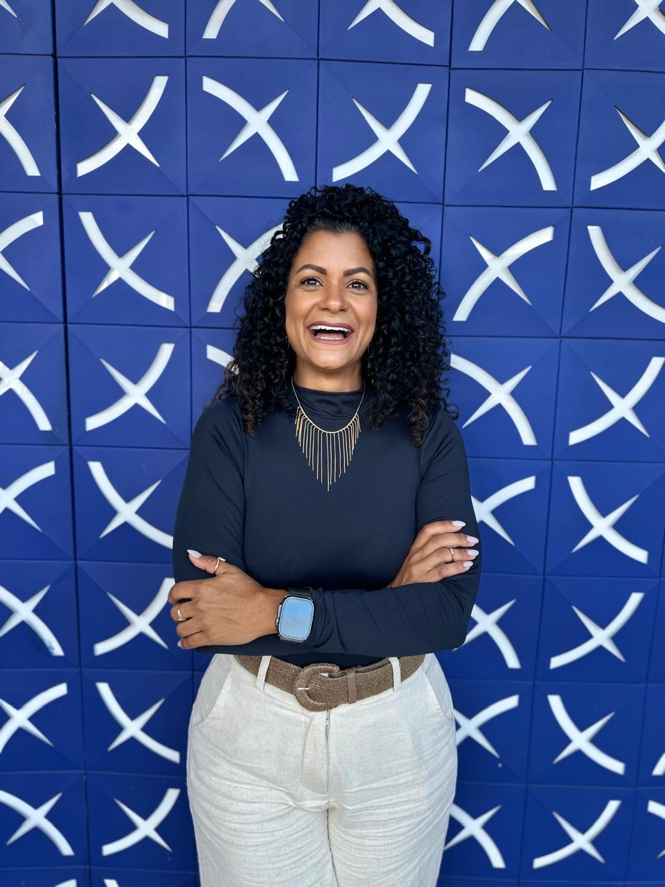
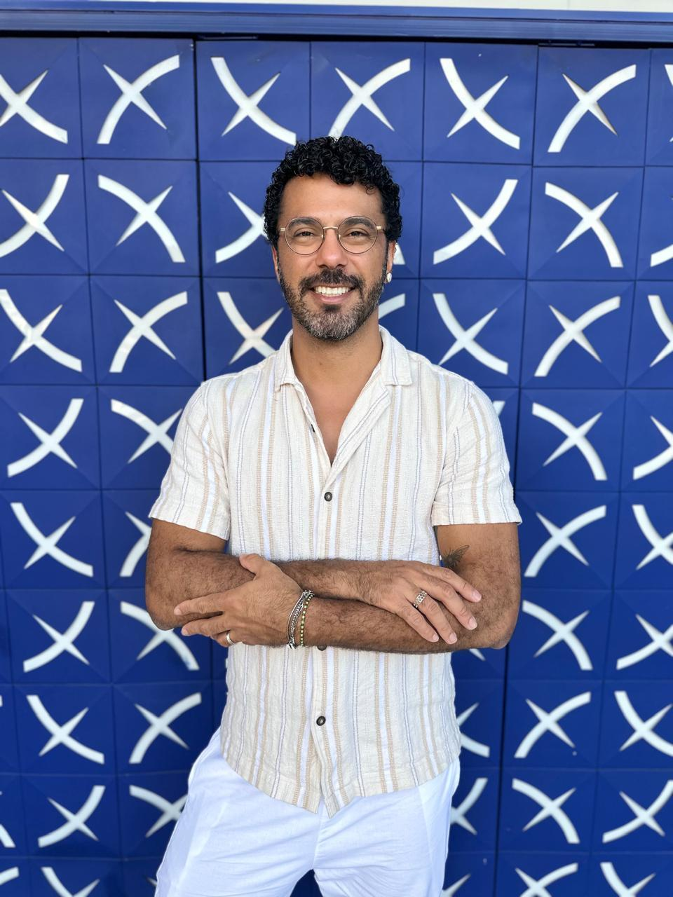

🎯
Missão
Promover a saúde integral, com foco especial na saúde mental, por meio de ações educativas, sociais, culturais e de desenvolvimento humano.
Desde 2007, o Instituto 61 atua para promover saúde integral, desenvolvimento humano, inclusão social e dignidade.
O Instituto 61 é uma organização da sociedade civil, sem fins lucrativos, fundada em setembro de 2007. Nascemos com o propósito de cuidar de pessoas de forma integral, acreditando que saúde vai muito além do físico: ela envolve emoções, relações, oportunidades e dignidade.
Atuamos com projetos voltados para saúde, educação, lazer, cultura, assistência social, esporte e afins, por acreditar que a promoção de saúde está diretamente ligada à dignidade em todas as áreas da vida.
Ao longo da nossa trajetória, construímos um trabalho comprometido com o desenvolvimento humano, promovendo ações que acolhem, orientam e fortalecem indivíduos em diferentes fases da vida.
Atuamos para transformar vidas. Desenvolvemos ações, parcerias e projetos que promovem qualidade de vida, saúde mental e inclusão social.
Nosso trabalho busca não apenas atender necessidades imediatas, mas também gerar transformação duradoura, fortalecendo autonomia emocional, financeira, vínculos e perspectivas de futuro.
Promover a saúde integral, com foco especial na saúde mental, por meio de ações educativas, sociais, culturais e de desenvolvimento humano.
Ser referência em ações e atividades que construam uma sociedade mais saudável, justa e acolhedora, onde todas as pessoas tenham acesso a oportunidades e cuidado de qualidade.
Respeito ao ser humano, ética, responsabilidade social, promoção da equidade, compromisso com o cuidado integral, valorização da diversidade, acolhimento e empatia.
Pessoas comprometidas com a missão institucional e com a continuidade das ações sociais do Instituto 61.


